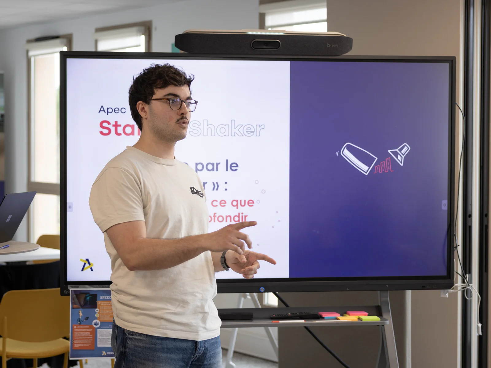
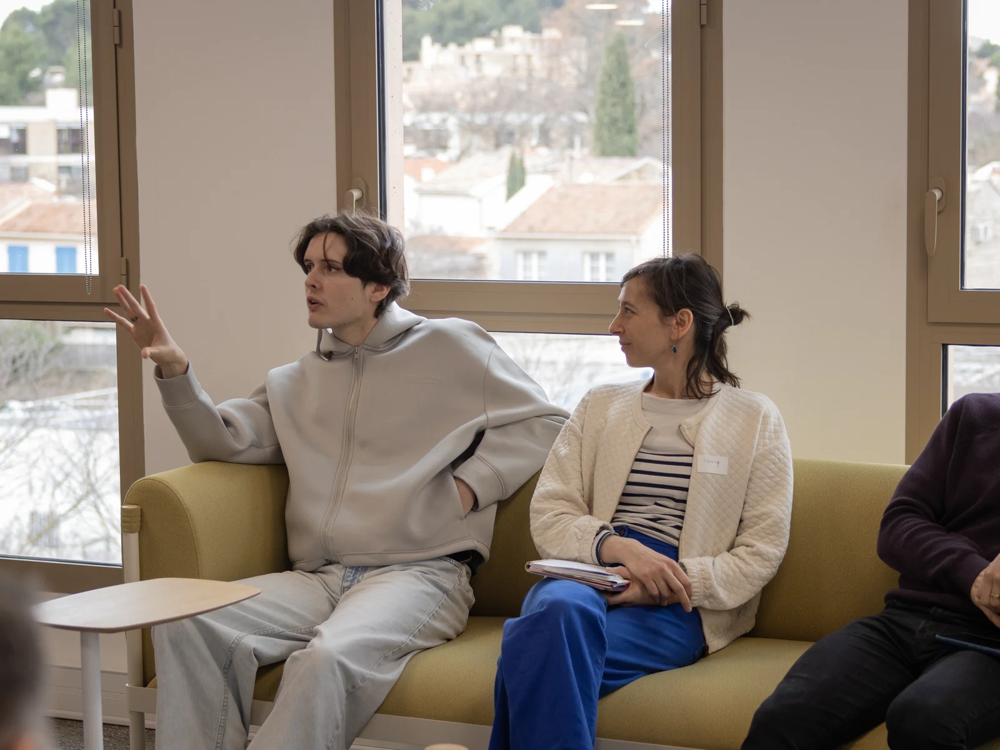

Présentation & Mon rôle
Capter l'instant
en réunion.
Dans le cadre de mon stage chez BookiBox, j'ai accompagné Samuel lors d'une réunion à l'APEC d'Aix-en-Provence pour en assurer la couverture photographique. La mission était claire : capter l'instant sur le vif — échanges, regards et moments clés de la rencontre — afin d'alimenter une publication LinkedIn professionnelle. J'ai géré l'intégralité de la prise de vue sur le terrain, en composant mes cadres en temps réel pour saisir l'ambiance corporate tout en restant discret, sans interrompre le déroulé de la réunion.

Matériel & livraison
Retouche et livraison
express.
Les photos ont été capturées avec mon boîtier hybride habituel, le Canon R7, pensé pour la réactivité et la qualité d'image en conditions réelles. L'enjeu principal résidait dans la rapidité de livraison : j'ai trié et retouché l'ensemble de la série sur Adobe Lightroom dans la journée même, afin de délivrer les visuels finalisés au plus vite à Séverine, consultante RH de l'APEC. Cette dernière a ensuite exploité mes photographies dans sa publication LinkedIn, donnant au reportage sa visibilité finale.

Résultat